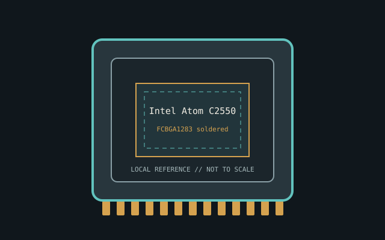

[ INDIVIDUAL CPU COMPONENT ]
Intel Atom C2550
Rangeley embedded SoC, 2013; 4C/4T, 2.40 GHz, 2 MB, 14 W. Model-specific record; confirm the complete part marking before installation.

IDENTIFICATION: Intel Atom C2550. Product name alone does not establish package, stepping, voltage or firmware compatibility.
Verified model specifications
| Catalog path | Intel → Atom, embedded and entry processors |
|---|---|
| Model and compute | Rangeley embedded SoC, 2013; 4C/4T, 2.40 GHz, 2 MB, 14 W |
| Package / socket | FCBGA1283 soldered |
| Compatibility | Board firmware/errata matter; some C2000 boards require LPC clock service fix |
| Stepping and variants | Check stepping/errata and manufacturing revision |
Compatibility and service
- Board firmware/errata matter; some C2000 boards require LPC clock service fix
- Check stepping/errata and manufacturing revision
- Preserve repair history; boot test alone can't establish reliability
- Confirm board manual, exact CPU support list, firmware, voltage/power, memory and cooling before use; never force a package.
Service & archival notes
Preserve repair history; boot test alone can't establish reliability
Photograph package, markings, contacts and date/lot codes before repair. Log host board, BIOS/microcode, memory, cooler, condition, provenance and source revision.
Sources & further reading
- Intel ARK — Intel Atom C2550Manufacturer specifications; search exact model and package S-spec.
- Intel processor architecture manualsManufacturer reference for architecture and instruction behavior.
Manufacturer documents take precedence. Family-level references may not resolve every stepping; verify the marking and motherboard CPU list.